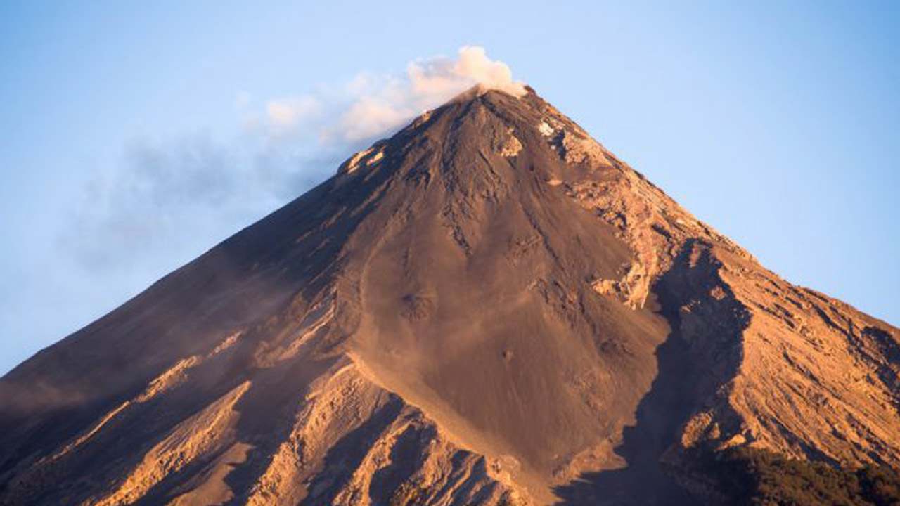
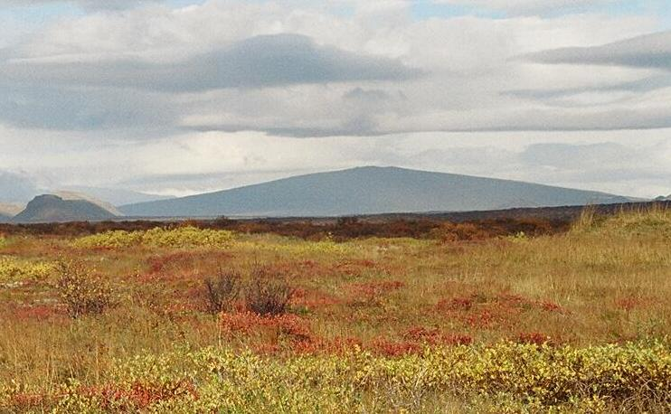
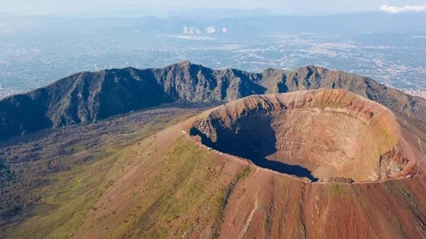
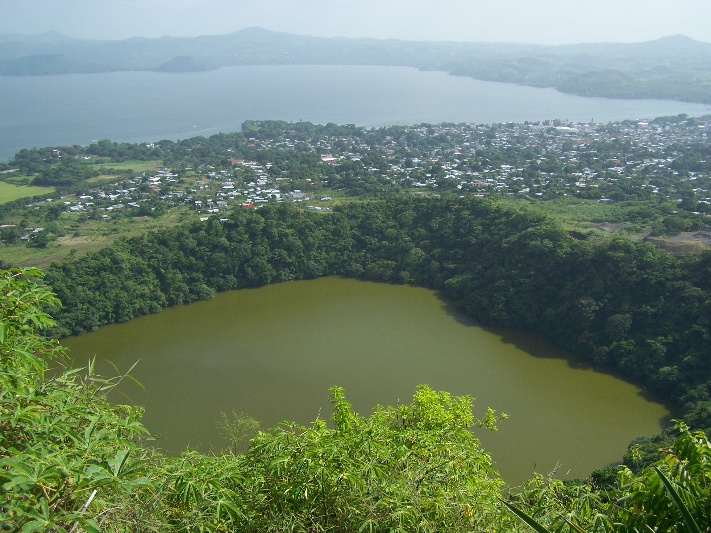

Un volcán es básicamente una abertura o grieta en la corteza terrestre conectada a una cámara magmática y por la cual los materiales incandescentes en forma magma (lava, gas y líquidos a altas temperaturas) del interior de un planeta emergen y se acumulan en la superficie de este.
Volcán compuesto o estratovolcán
Son grandes y tienen forma cónica con un cráter central, el edificio volcánico está formado por capas sucesivas de depósitos de lava y fragmentos de roca: escoria, arena y cenizas, producto de diferentes erupciones. Por esta razón se les llama compuesto. Estos volcanes a menudo forman impresionantes picos nevados que son superiores a los 2,500 metros (8.6 millas) de altura, 1,000 (621 millas) kilómetros cuadrados en superficie, y 400 kilómetros (249 millas) cúbicos en volumen.
Volcán Escudo
Se caracterizan por ser grandes montañas, con pendientes suaves, formadas por la superposición de ríos de la lava fluidos. Los volcanes escudo son enormes en tamaño. Están compuestos por muchas capas de flujos de lava. La lava se derrama fuera de un orificio de ventilación central o grupo de orificios de ventilación. Se forma un cono bastante ancho. Es causado por lava basáltica, la cual es muy fluida, y que no puede amontonarse en lugares empinados. Los volcanes escudo pueden ser producido por los puntos calientes que están lejos de los bordes de las placas tectónicas.
Caldera Volcánica

Una caldera volcánica es un profundo hundimiento de la superficie terrestre originado por diversos factores geográficos vinculados a las erupciones de los volcanes. Posee una estructura más o menos circular, con un fondo relativamente extenso y paredes verticales muy parecidas a los cráteres, pero de grandes dimensiones. Cabe resaltar que la depresión que caracteriza a la caldera volcánica no debe confundirse con cráter.
Volcán Somma
Un volcán Somma es un tipo de volcán complejo formado por una caldera en forma de herradura , sobrante de la destrucción de un antiguo cono volcánico , y cuyo fondo está parcialmente ocupado por un nuevo cono más reciente. Este nombre tiene su origen en el Monte Somma , un antiguo estratovolcán en el sur de Italia , ubicado en el lugar del actual Vesubio , que se estableció en el corazón de la caldera formada por las sucesivas erupciones del antiguo volcán.
Volcán Tuya

Los tuya son un tipo de volcán subglacial formado por lechos de lava basáltica casi horizontales que superan los lechos de lava con inmersión hacia afuera, que consiste en roca volcánica fragmentada, que a menudo emergen aislados de los campos de lava circundantes. Ejemplos de tuya se pueden encontrar en Islandia, Columbia Británica, en la región del paso de Santiam en Oregón, en la Península Antártica debajo del Inlandsis antártico occidental en la Antártida. Tuya en Islandia a veces se llama "montañas de mesa" debido a la parte superior plana.
Cono de Escoria

Los conos de escorias o conos de tefra son conos de pequeño tamaño formados por la acumulación de productos fragmentarios (ceniza, lapilli, bombas o bloques) generados por una actividad volcánica de moderada intensidad. En la cima suelen tener una cavidad o cráter por donde el magma sale al exterior. En la galería de imágenes se muestran conos de escorias de las islas de Fuerteventura y Lanzarote. En la imagen 2 se aprecia el cono al fondo (derecha) y coladas basálticas a sus pies.
Maar o Cráteres de explosión
Un maar es un cráter volcánico ancho y bajo, producido por una erupción freático-magmática, es decir, una explosión causada por agua subterránea que entra en contacto con lava caliente o magma. Los maares suelen llenarse de agua, formando un lago de cráter o laguna cráterica de poca profundidad. Las dimensiones de los maares varían entre 60-2000 m de diámetro y entre 10-200 m de profundidad.
Domo de Lava

Un domo de lava es un montículo que se forma cuando las pilas de lava se amontonan sobre el respiradero de un volcán, en lugar de alejarse del mismo. Dado que la erupción de lava en este tipo de volcanes es lenta, no existe posibilidad de que el flujo de lava se produzca, por lo que formará la cúpula o domo de lava.